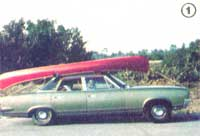
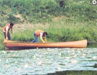
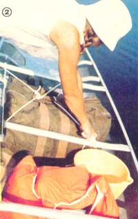
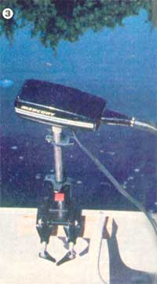
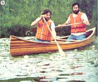
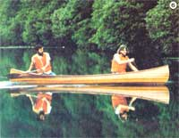
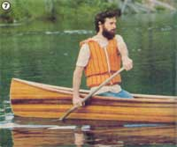
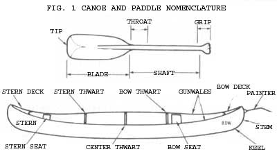
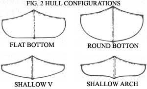
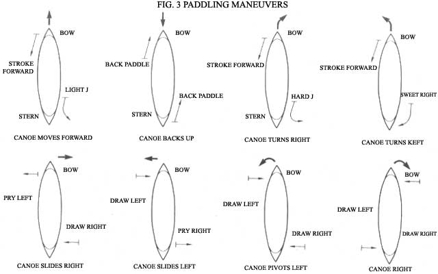

"'And you really live by the river? What a jolly life!' 'By it and with it and on it and in it,' said the Rat." (Kenneth Grahame, The Wind in the Willows)
PHOTOS BY THE AUTHORS AND MOTHER'S STAFF
[1] A car-top canoe carrier can be as simple as two rolled blankets and a couple of ropes. [2] Lash all your gear to the thwarts… so that nothing will be lost if the boat should capsize. [3] A 1- to 3-HP motor can be clamped to the side-near the stern-of the canoe (the putter shown here is an electric powerplant). [4] When boarding, the bow paddler climbs into position while the person who’ll sit in the stern steadies the craft. [5] Paddling requires teamwork, whether the canoe is pivoting among lily pads or… [6] gliding on a mirrorlike pond. [7] Because the pivot point of the craft is its center, the stern paddler (who is located farther from that than is the bow person) will have a greater effect on-and more control over-the line of travel.
Dennis and Judy Sizemore
Canoeists, like the Water Rat, know the joys of paddling on a lake or river, flowing along in harmony with the earth's natural forces and often enjoying glimpses of her untouched beauty that the shorebound never have a chance to view. Furthermore, waterways that are deep enough to accommodate motorized boats tend to be heavily trafficked . . . but narrow and twisting streams, broad flat swamps, and shallow inlets where only small craft can venture remain far more wild. And the canoe-with its quiet grace, speed, ease of handling, light weight, versatility, and relatively low cost-is the ideal boat for exploring such reaches.
If you're hankering for adventure, then, or simply want to enjoy the wonders of nature that can best be found off the beaten trail, canoeing could be your ticket to freedom. Learning how to handle one of the narrow, tippy vessels will take some practice, of course, but the following guidelines for choosing equipment and mastering the basic paddling techniques should put you on your way to becoming at ease on the water.
CHOOSING A CANOE
A new canoe of good quality will cost you a hefty $400 to $2,000, while a used one will run from $100 on up. So as a novice (see Fig. 1 so that you can talk like an expert) you'll want to rent your equipment until you're familiar with the various styles of craft and know which will best meet your specific needs. Check with camping stores or boat dealers for information on nearby canoe liveries.
The sleek river runners come in a confusing variety of sizes, designs, and materials . . . simply because there is no perfect, all-purpose canoe. You'll want to choose the style most suited to the type of paddling you'll be doing. For example, will you be cruising on flat water or running the rapids? Do you plan to travel as a solo paddler or with a partner? Are you primarily interested in fishing, racing, or canoe camping? These factors-and a good many others-can influence your choice of equipment.
DESIGN CONSIDERATIONS
In general, it's best to select the longest canoe that suits your needs. Although they're lightweight, the shorter craft (those from 10' to 13') tend to ride low in the water, offer little room for gear, and are typically slower and more unstable than are longer canoes. So even if you intend to paddle solo, you'll want to choose a 14-footer, at least.
Most canoeists prefer a 16' to 18' craft. The standard 17' size travels swiftly when powered by two paddlers, has the capacity to carry a good bit of gear, and is easy to handle in white water. Canoes over 17' have an increased capacity (meaning that they ride higher in the water than would a shorter canoe loaded with the same weight), but in gaining that advantage they sacrifice maneuverability. Therefore, craft 18' or longer are used primarily for cruising on flat water.
When selecting a canoe length, you should also be aware of the craft's beam (the width of the boat at its widest point) and the degree of fullness from the beam to the ends of the craft. The more pointed and narrow a canoe, the faster it will travel . . . however, that speed is achieved at the expense of stability.
Another aspect of canoe design is depth. On a wind-protected river you'll want a center depth of about 15", in order to be sure you have adequate freeboard (that's the height of the craft's side above the water-line) to prevent white-water waves from splashing into your lap and swamping the canoe. On an open lake, however, the wind will tend to catch such high sides and blow you off course, so a shallower craft-11" to 12"-would be more appropriate.
Hull configuration will play an important role in determining your canoe's specific function, too. There are two basic types of hulls: flat-bottomed and rounded (see Fig. 2). The former design has a very shallow draft (the amount of boat that rides under the water), ample cargo-carrying capacity, and stability. This type of canoe is generally the choice of fisherfolk, since it gives an angler room to stand up and cast, and will remain relatively steady while he or she does so. Variations of the flat-bottomed hull are the "shallow V" and the "shallow arch" designs. Each of these configurations results in a canoe that initially is somewhat tippier than is a flat-bottomed boat, but has a greater reserve stability if the craft should really begin to go over, and such designs are sometimes preferred for general-purpose recreational canoes.
The round-bottomed style feels least stable at first, but is actually very seaworthy in rough waters. It's also the fastest type, making it the choice of white-water racers and long-distance paddlers.
Finally, you'll have to decide what type of keel (the centerline that runs along the bottom of the craft), if any, will best fit your needs. Some canoes have a "fin" keel, others have a flat or "shoe" keel, and still others are keelless. (An aluminum canoe, of course, always has a keel . . . since that feature functions as the joint that holds the two sides of the boat together.) A fin keel can help to keep a craft on course in a strong wind by minimizing sideways slippage, but in a swiftly flowing shallow river, the fin has a tendency to hang up on rocks ... so in such waters the flatter shoe keel would be a better choice. In fact, real white-water fans frequently prefer a keelless design (it offers no drag and allows the canoe to slip sideways easily to avoid obstacles) with "rockered" ends, resulting in a highly maneuverable craft.
Each of the design elements-length, beam, depth, hull shape, and keel-will play a part in determining the handling characteristics of your canoe. As a newcomer to the sport, then, you'll want to try out different styles and combinations, and finally choose a design that suits you.
MATERIALS
One of the most important factors to consider when you're in the market for a canoe is the material-wood, aluminum, fiberglass, Kevlar, or ABS plastic-it's made of. And, again, you should get to know the various materials, to see how they hold up, before putting down any cash.
Wood makes by far the most attractive canoes and-if cared for properly-will last for decades. Wooden craft do, however, require some upkeep, and they're heavier than are those constructed of the more modern materials. In addition, the high price of wooden canoes ($1,000+) puts them beyond the budgets of most would-be owners. (Those purse-minded purists who yearn for the beauty and sleek performance of wood might consider buying a do-it-yourself canoe kit, such as the one offered by Old Town-see the access list in the accompanying sidebar-which produces a 17' cedar strip model.)
The low price, light weight, durability, and low maintenance needs of aluminum canoes make them practical for both white-water and general family use. The main drawbacks of aluminum are its lack of aesthetic appeal, its noisiness, and its tendency to cling to rocks rather than slip over them as plastic or fiberglass will do. On the other hand, aluminum will slide unharmed over sand bars, and can withstand the kind of brutal treatment that would often damage a wooden or fiberglass boat. If you decide a metal canoe will suit your paddling style, choose one with close, flush rivets on the keel line and neoprene seals... to assure watertight joints.
Fiberglass is one of the most popular canoe materials, because of its reasonable price, attractiveness, and low maintenance requirements. However, fiberglass craft can range in quality from poor to excellent, so you'll want to examine any prospective purchase closely. Avoid the "chopper gun" models, which are made by shooting shredded fiberglass matting into a liquid resin, resulting in a heavy but weak hull. The hand-layup method, in which sheets of fiberglass cloth are wetted down with a high-quality resin and placed by hand on the canoe, is a far superior construction technique. When buying a fiberglass canoe, you'll get what you pay for... so be leery of "bargains", and always look for the cloth weave on the inside of the craft.
A newer material called Kevlar (it's a fiberglass polyamide) is woven into sheets and hand-laid in much the same way as is fiberglass, although the Kevlar process is considerably more costly and sophisticated. This synthetic is substantially lighter and sturdier than fiberglass, too, and these qualities are reflected in a typically higher cost.
The most recently developed canoe-body substance is ABS (it stands for acrylonitrile-butadiene-styrene) plastic, marketed under such trade names as Royalex and Oltonar. A typical ABS "sandwich" consists of expanded buoyant plastic foam encased in layers of ABS and covered with a tough vinyl skin. This unusually durable material has the unique ability to snap back into shape after a collision. Plastic canoes are relatively maintenance-free as well as being rugged, and-not surprisingly-frequently command hefty prices.
PADDLE CHOICES
Finding a canoe, of course, is only part of the outfitting process . . . you'll still need something with which to propel it! Paddles are made from almost every material used in canoe manufacturing, and the advantages and disadvantages of each substance are similar, as well. Wooden paddles are generally heavier and require periodic sanding and varnishing, while the synthetics and metal need little or no upkeep. If you choose wood, you'll find that a laminate is sturdier and lighter than a solid piece. If, on the other hand, you prefer a paddle honed from a single plank, be sure to select one no wider than 6-1/2", as a broader blade will tend to split.
Like canoes, paddles come in a variety of designs, and again your choice will depend on the type of canoeing you'll be doing. The common "beavertail" blade, for example, has a rounded tip... as opposed to the square blade popular with white-water canoeists. You'll also have to select either the long-established "pear" grip or the newer "T" handhold.
There are two rules of thumb commonly used to determine the length that will suit you best: You might simply choose a paddle that-when you're in a standing position-reaches up to your chin or a bit higher . . . or you could, instead, buy one that just fits between your hands when your arms are stretched out to the sides.
MASTERING THE BASICS
As is the case with any active sport, canoeing demands a certain proficiency in several specific skills. Before you even set foot in one of the narrow boats, it's a good idea to practice the basic strokes . . . while, say, kneeling on the edge of a dock. Hold the paddle by placing the palm of the hand that's opposite your paddling side on top of the grip, and-with the other hand-grasp the shaft as close to the blade as is comfortable. Since a paddle is most efficient when it's vertical, or nearly so, make sure the blade will enter the water at a point near your knee, and draw it back only as far as your hip. Then, as you return the paddle forward for a second stroke, "feather" it (turn its edge forward) in the air to decrease its wind resistance.
Once you've gotten the "feel" of paddling, get a partner and practice the different strokes in a canoe . . . keeping close to shore at first. If possible, have an experienced canoeist friend take the stern while you sit in the bow, and let him or her instruct you in the various techniques (see Fig. 3). You'll want to learn how to go forward and back up, pivot the boat, turn in a wide "sweep" stroke, execute emergency maneuvers, and-once you graduate to the stern-master the "J" stroke.
Of course, just getting into and out of the boat can be an education in itself. To board, first pull the canoe parallel to the dock. Then stow all your gear (which should be in watertight bags), balancing the weight fore and aft as well as from side to side, and lash it securely to the thwarts. Be sure-even on short outings-to take along an extra paddle, bailers (capped milk jugs, cut off at the bottom, and sponges will do nicely), and duct tape (for emergency repairs). . . attach a painter (a length of line) to the bow and coil it neatly in the boat . . . and always wear life preservers. Finally-with all the gear secure-the person who will sit in the bow climbs aboard . . . and, once he or she is seated, the stern rider eases in place.
It's best to paddle from a kneeling position (in order to keep your center of gravity low in the boat), resting your buttocks against the seat and using pads or cushions to minimize the wear and tear on your knees. Some canoeists find this position uncomfortable, however, and prefer to paddle from a seated position . . . except when in stormy water or rapids, where a low center of gravity would be essential.
Practice paddling in calm waters until the maneuvers become familiar. Also try capsizing the craft on purpose-holding onto your paddle-and then right the swamped canoe and propel it to shore.
UNDERWAY!
After you've mastered the strokes in the bow and stern and feel confident in both flat water and moderately fast streams, you might want to try an overnight canoe excursion. The guidelines on gear and safety that apply in other wilderness activities all hold true for canoe trips. Make sure you take equipment appropriate to canoeing, hiking, and camping . . . including a first aid kit and emergency repair materials, compasses, maps, matches, a flashlight, and insect repellent. Remember to guard against the sun with a wide-brimmed hat, long-sleeved shirt, sunglasses, and sunscreen, and to have some warm woolen clothing along for comfort on wet and windy days. In short, think ahead and try to prepare for all possible situations.
Before actually making the trip, read all you can about the waterways on which you'll be traveling. You can get topographical maps from your state's Geological Survey or Parks and Recreation department (look under "Government Offices-State" in the Yellow Pages). In addition, there are innumerable canoe-trail guidebooks put out by canoeing organizations and outfitters (it's best to get several and compare the information). You'll want to be familiar enough with the route, before you set out, to be able to anticipate each stretch and be aware of any possible fluctuation in the river. (If at all possible, canoe with a partner who has traveled the waters before.)
WHERE OT SHOP
When you set out to buy your equipment, you'll find that there are hundreds of firms to choose from. It's a good idea to shop for name-brand canoes, as the quality of such manufacturers' workmanship has been established over the years. It's impossible, of course, to include even a representative sampling of the major canoe-makers here, but the following list will at least help you get started in your search. (Remember, too, to check with local canoe clubs and outfitters for bargains in used equipment that they might know about.)
Alumacraft Boat Company, Dept. TMEN, 315 West St. Julien, St. Peter, Minnesota 56082 (catalog free)
Black River Canoes, Dept. TMEN, P.O. Box 537, 167 Railroad Street, LaGrange, Ohio 44050 (catalog and fact book $1.00)
Blue Hole Canoe Company, Dept. TMEN, P.O. Box 179, Cherry Street, Sunbright, Tennessee 37872 (catalog free)
Easy Rider Canoe and Kayak Company, Dept. TMEN, P.O. Box 88108, Tukwila Branch, Seattle, Washington 98188 (catalog $1.00)
Grumman Boats, Dept. TMEN, Marathon, New York 13803 (catalog free)
Mad River Canoe, Inc., Dept. TMEN, P.O. Box 610, Waitsfield, Vermont 05673 (catalog free)
Old Town Canoe Company, Dept. TMEN, P.O. Box 548, Old Town, Maine 04468 (catalog free)
Sawyer Canoe Company, Dept. TMEN, P.O. Box 435, 234 South State, Oscoda, Michigan 48750 (catalog free)
You'll also need to find out whether there are restrictions on fires and campsites or a quota system on the waterway, whether fishing is allowed (and whether the water is even potable ), and what problems you may encounter when putting a craft in or taking it out (is it necessary, for instance, to obtain prior permission to portage on private land?).
Finally, begin a steady program of physical conditioning well before the excursion. Take several day-long trips to accustom your muscles to continual paddling-and practice canoe carries over various kinds of terrain, with a pack on your back-before graduating to overnight (or longer) excursions. As always, travel with a friend or in a group.
Whether you take up canoeing for the challenge of white water, for the relaxation of an afternoon of fishing, for the fun of a family trip, or simply to satisfy your yen to wander, you'll discover that there is still peace along the waterways . . . and the opportunity to find real companionship, beauty, and adventure. Happy paddling!
EDITOR'S NOTE: Canoeing enthusiasts can choose among a number of fine books and magazines, dealing with all aspects of the sport, that are available at most libraries and bookstores. An excellent guide for the beginning canoeist is Canoeing by the American National Red Cross (Doubleday, 1977, $3.95), which lists basic techniques and provides complete safely rules. The most comprehensive mail order catalog of canoeing literature is put out by the Chicagoland Canoe Base, Dept. TMEN, 4019 North Narragan-sett Avenue, Chicago, Illinois 60634. In addition, do-it-yourselfers might be interested in The Stripper's Guide to Canoe-Building by David Hazen, available for $10.95 plus 95 cents shipping and handling from Mother's Bookshelf(restricted), P.O. Box 70, Hendersonville, North Carolina 28791 .
COMING UP
MOTHEK NO. 76 will feature one staffer's experience in building a 17' cedar strip canoe (pictured in the photos accompanying this article) from a do-it-yourself kit. Be sure not to miss it!
|
 |
 |
 |
|
 |
 |
 |
|
 |
 |
 |
|
 |
|
|